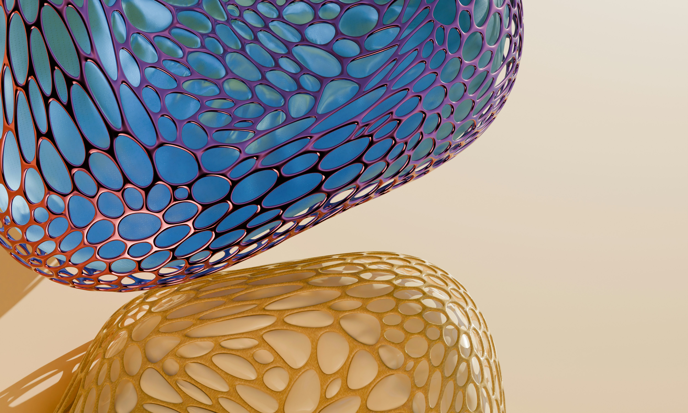
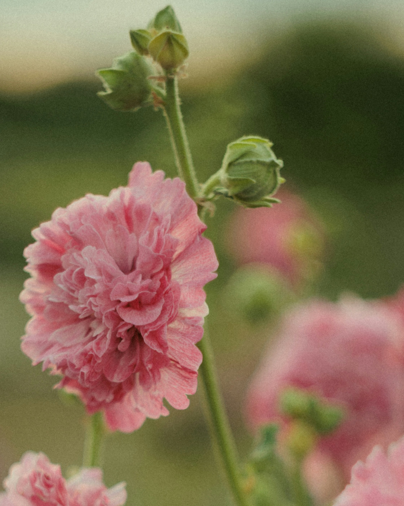
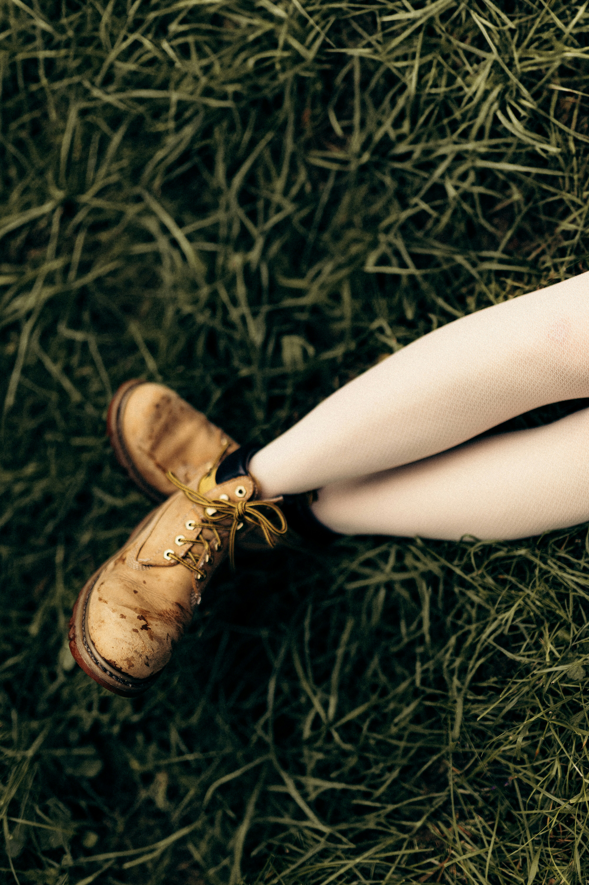

Наблюдения о городе и тишине
Вне
фокуса
История о том, как случайный взгляд превращает знакомое место в совершенно новое.
листайте вниз
Пролог / 08:47
Город начинается с расстояния
01
Ближе к деталям
Утро собирается из коротких жестов: света в окне, знакомого маршрута, запаха еды и разговоров, которые остаются за кадром. Стоит замедлиться — и фон становится главным событием.

«Иногда достаточно изменить точку зрения, чтобы привычный день перестал быть привычным».
Интерлюдия / 16:12
Свет хранит короткую память
02
Тихие совпадения
Цвет, форма и поверхность ненадолго встречаются в одном кадре. В этом нет заранее написанного сюжета — только внимание к тому, что уже происходило рядом.


